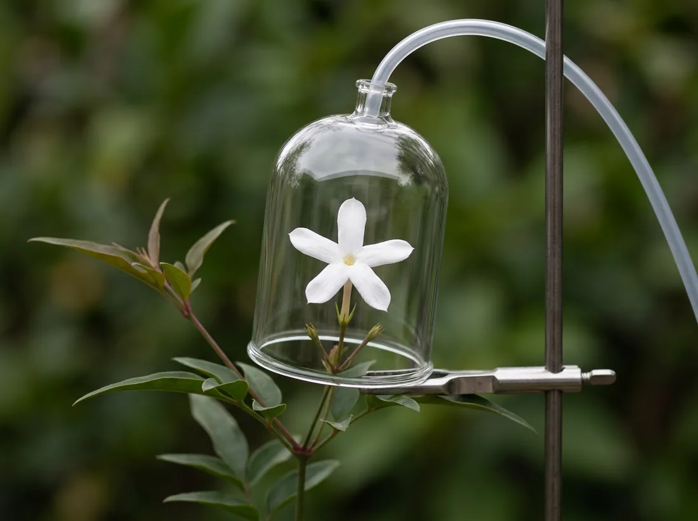
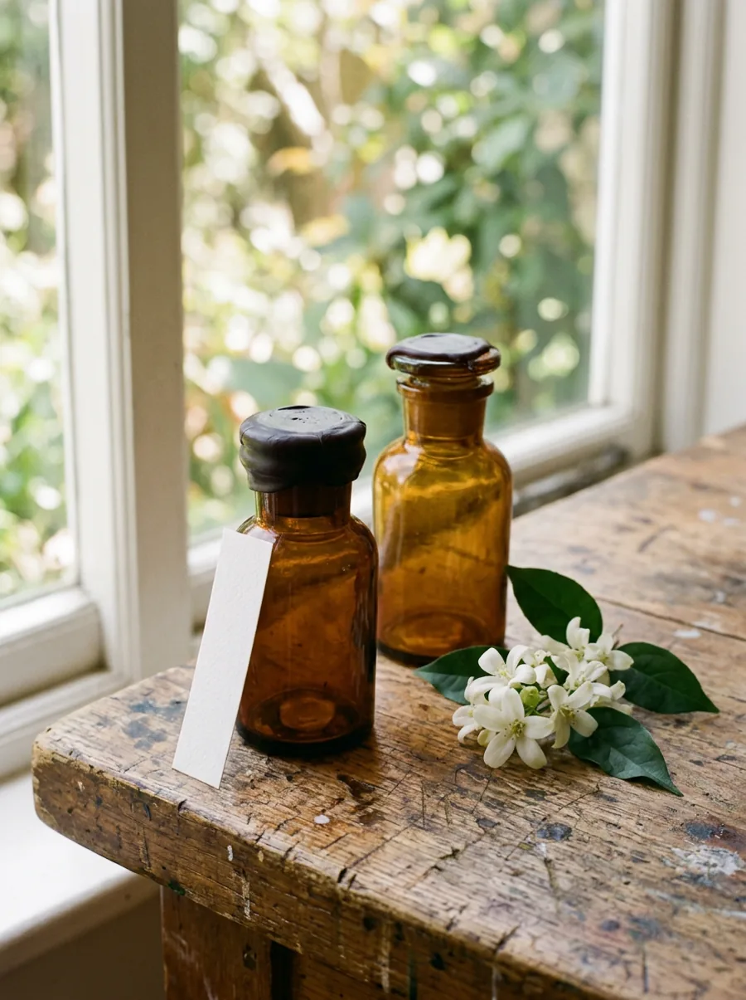

<meta charset="utf-8">
<meta name="viewport" content="width=device-width, initial-scale=1">
<title>Small Hours — botanical perfumery</title>
<meta name="description" content="Botanical perfumery. We work at night, because that is when the flower does. One jasmine flower, one night, read under a bell.">

<style>
  @font-face { font-family: "Alegreya"; src: url("fonts/alegreya-var.woff2") format("woff2");
    font-weight: 400 900; font-style: normal; font-display: swap; }
  @font-face { font-family: "Alegreya"; src: url("fonts/alegreya-italic-var.woff2") format("woff2");
    font-weight: 400 900; font-style: italic; font-display: swap; }
  @font-face { font-family: "Azeret"; src: url("fonts/azeret-mono-var.woff2") format("woff2");
    font-weight: 400 700; font-style: normal; font-display: swap; }

  :root {
    /* Three grounds. The page is LIGHT everywhere except the one chapter that
       actually happens at night — the dark is rationed, not the default. */
    --paper:   #F4F1E8;   /* unbleached, warm */
    --paper-2: #ECE7DA;
    --ink:     #21232B;   /* warm near-black, never pure */
    --ink-soft:#5C5A52;
    --night:   #12141F;   /* blue-black — the instrument's ground */
    --lamp:    #E0A83E;   /* the sodium-amber a picker carries */
    --rule:    rgba(33,35,43,.16);

    /* The seven compounds. A swatch on this page ALWAYS means a molecule —
       these are never used decoratively. Kept in sync with #headspace by
       tests/template-portfolio.test.ts. */
    --c-benzyl-acetate:      #D9A05B;
    --c-linalool:            #7FA8B8;
    --c-cis-jasmone:         #E0A83E;
    --c-indole:              #8D5A7A;
    --c-methyl-anthranilate: #B98FA8;
    --c-benzyl-benzoate:     #9A9179;
    --c-hexenyl-acetate:     #7D9A5E;
    --c-others:              #4A4D5E;
  }

  * { box-sizing: border-box; }
  html { -webkit-text-size-adjust: 100%; }
  body {
    margin: 0; background: var(--paper); color: var(--ink);
    font-family: "Alegreya", Palatino, Georgia, serif;
    font-size: 18px; line-height: 1.58;
    /* NOTE: no overflow rule here or on any stage ancestor. `overflow-x:hidden`
       computes overflow-y:auto, which makes the element a scroll container and
       silently breaks position:sticky against the viewport. (㉑ s105, killer 2.) */
  }
  /* width:100% is load-bearing, not belt-and-braces: `margin:0 auto` on a GRID
     ITEM makes the box shrink-to-fit and centre instead of stretching, so the
     hero's top bar collapsed to its content width (measured 418px in a 1440px
     viewport) while every .wrap in a block context was fine. */
  .wrap { width: 100%; max-width: 1180px; margin: 0 auto; padding: 0 28px; }
  .mono { font-family: "Azeret", ui-monospace, Menlo, monospace;
    font-size: 11px; letter-spacing: .12em; text-transform: uppercase; }
  h1, h2, h3 { font-weight: 500; margin: 0; }
  p { margin: 0 0 1.05em; max-width: 62ch; }
  a { color: inherit; }
  em { font-style: italic; }
  .sec-no { color: var(--ink-soft); margin-bottom: 14px; }

  /* ---------------- hero — the page's BRIGHTEST moment is its first --------- */
  header.hero { position: relative; min-height: 92svh; display: grid;
    grid-template-rows: auto 1fr auto; }
  header.hero img { position: absolute; inset: 0; width: 100%; height: 100%;
    object-fit: cover; z-index: 0; }
  .topbar, .hero-foot { position: relative; z-index: 2; }
  .topbar { display: flex; justify-content: space-between; align-items: baseline;
    padding: 22px 0; gap: 20px; flex-wrap: wrap; }
  .hero-foot { padding: 34px 0 52px;
    background: linear-gradient(transparent, rgba(244,241,232,.90) 38%, var(--paper)); }
  h1 { font-size: clamp(52px, 9.5vw, 118px); line-height: .88; letter-spacing: -.022em;
    margin-bottom: 16px; }
  .lede { font-size: clamp(19px, 2.2vw, 24px); max-width: 34ch; margin: 0; }

  section { padding: clamp(72px, 9vw, 122px) 0; }
  h2 { font-size: clamp(29px, 4.3vw, 47px); line-height: 1.06; letter-spacing: -.015em;
    margin-bottom: 20px; max-width: 22ch; }
  .two { display: grid; grid-template-columns: 1.06fr .94fr; gap: clamp(32px, 5vw, 66px);
    align-items: center; }
  .two img { width: 100%; height: auto; display: block; border-radius: 2px; }
  .tint { background: var(--paper-2); }

  /* ---------------- THE STAGE ------------------------------------------------
     Grid, and the row is left to STRETCH. `align-items:flex-start` here cancels
     the default stretch, leaves the sticky column one viewport tall inside a
     4,000px section, and the pin has no travel. (㉑ s105, killer 1.)          */
  .stage-sec { background: var(--night); color: var(--paper); padding: 0; }
  .stage-sec .wrap { display: grid; grid-template-columns: minmax(0, 1fr) minmax(300px, 380px);
    gap: clamp(28px, 4vw, 62px); }
  .stage-col { min-width: 0; }
  .stage { position: sticky; top: 0; height: 100svh; display: grid;
    grid-template-rows: auto minmax(0, 1fr) auto; gap: 14px; padding: 22px 0 26px; }
  .slug { color: rgba(244,241,232,.5); }

  /* `contain` is deliberate — `cover` would crop the leaves that anchor the
     frame, and the whole point of the sequence is that the composition never
     moves. The leftover space is therefore left transparent so the photograph
     floats on the night ground instead of sitting in a slightly-wrong-coloured
     letterbox. */
  .frames { position: relative; min-height: 0; background: transparent; }
  .frames img { position: absolute; inset: 0; width: 100%; height: 100%;
    object-fit: contain; opacity: 0; }
  .frames img.on { opacity: 1; }

  .instrument { display: grid; gap: 12px; }
  /* THE READING — the whole emission of this moment as one band of colour.
     This is where the palette axis IS the instrument rather than the theme. */
  .reading { display: flex; height: 11px; border-radius: 1px; overflow: hidden; }
  .reading i { display: block; height: 100%; transition: width .18s linear; }
  .profile { display: grid; gap: 6px; }
  .row { display: grid; grid-template-columns: minmax(0, 152px) minmax(0, 1fr) 46px;
    gap: 12px; align-items: center; }
  .row .nm { font-family: "Azeret", ui-monospace, Menlo, monospace; font-size: 10px;
    letter-spacing: .04em; text-transform: uppercase; color: rgba(244,241,232,.64);
    white-space: nowrap; overflow: hidden; text-overflow: ellipsis; }
  .row .track { height: 7px; background: rgba(244,241,232,.08); border-radius: 1px; }
  .row .track i { display: block; height: 100%; border-radius: 1px;
    transition: width .18s linear; }
  .row .vl { font-family: "Azeret", ui-monospace, Menlo, monospace; font-size: 10px;
    text-align: right; font-variant-numeric: tabular-nums; color: rgba(244,241,232,.64); }
  .row.tail .nm, .row.tail .vl { color: rgba(244,241,232,.36); }

  .readout { display: flex; flex-wrap: wrap; gap: clamp(16px, 3vw, 40px);
    border-top: 1px solid rgba(244,241,232,.2); padding-top: 11px; }
  .readout div { color: rgba(244,241,232,.55); }
  .readout b { display: block; font-family: "Azeret", ui-monospace, Menlo, monospace;
    font-size: clamp(19px, 2.4vw, 27px); font-weight: 400; letter-spacing: -.01em;
    color: var(--paper); font-variant-numeric: tabular-nums; text-transform: none; }

  .chapters { padding: 16vh 0 18vh; }
  .chap { min-height: 78svh; display: grid; align-content: center;
    border-left: 1px solid rgba(244,241,232,.15); padding-left: 24px; }
  .chap.on { border-left-color: var(--lamp); }
  .chap .hr { color: rgba(244,241,232,.45); margin-bottom: 10px; }
  .chap.on .hr { color: var(--lamp); }
  .chap h3 { font-size: clamp(26px, 3vw, 33px); line-height: 1.1; margin-bottom: 12px; }
  .chap p { color: rgba(244,241,232,.72); max-width: 42ch; font-size: 17px; }
  /* THE WINK — budgeted up front, because ⑳ shipped without one by losing it in
     a change of approach. It lands only on the chapter where the house stops
     measuring and starts picking. */
  .wink { margin-top: 22px; padding-left: 15px; border-left: 2px solid var(--lamp);
    font-style: italic; color: rgba(244,241,232,.62); font-size: 16px; max-width: 34ch; }

  /* ---------------- the lay twin ------------------------------------------- */
  .twin { border-top: 1px solid var(--rule); margin-top: 30px; }
  .twin .tr { display: grid; grid-template-columns: minmax(0, 300px) minmax(0, 1fr);
    gap: clamp(14px, 3vw, 40px); padding: 19px 0; border-bottom: 1px solid var(--rule);
    align-items: baseline; }
  .twin .tn { font-family: "Azeret", ui-monospace, Menlo, monospace; font-size: 12px;
    letter-spacing: .02em; display: flex; align-items: baseline; gap: 10px; }
  .sw { width: 10px; height: 10px; border-radius: 50%; flex: 0 0 10px;
    transform: translateY(1px); }
  .twin .tw { margin: 0; max-width: 52ch; }

  /* ---------------- one molecule — the drama, earned, and inner ------------- */
  .indole { background: var(--c-indole); color: #FBF6F2; }
  .indole .big { font-size: clamp(28px, 4.6vw, 55px); line-height: 1.08; max-width: 19ch;
    font-weight: 500; letter-spacing: -.015em; margin-bottom: 26px; }
  .indole p { color: rgba(251,246,242,.85); }
  .scale { display: grid; grid-template-columns: 1fr 1fr; margin-top: 40px;
    border: 1px solid rgba(251,246,242,.32); }
  .scale > div { padding: clamp(20px, 3vw, 30px); }
  .scale > div + div { border-left: 1px solid rgba(251,246,242,.32); }
  .scale .mono { color: rgba(251,246,242,.72); margin-bottom: 10px; }
  .scale p { margin: 0; max-width: 30ch; }

  /* ---------------- the shelf ---------------------------------------------- */
  .shelf { display: grid; grid-template-columns: repeat(3, 1fr); gap: clamp(18px, 3vw, 34px);
    margin-top: 38px; }
  .shelf img { width: 100%; height: auto; display: block; border-radius: 2px; }
  .shelf h3 { font-size: 21px; margin: 15px 0 5px; }
  .shelf .mono { color: var(--ink-soft); }
  .shelf .obj { aspect-ratio: 3 / 4; overflow: hidden; border-radius: 2px; background: var(--paper-2); }
  .shelf .obj img { height: 100%; object-fit: cover; }

  footer { padding: clamp(64px, 8vw, 104px) 0; border-top: 1px solid var(--rule);
    background: var(--paper-2); }
  footer h2 { margin-bottom: 14px; }
  .fine { color: var(--ink-soft); margin-top: 44px; }
  .fine a { text-underline-offset: 3px; }

  /* ---------------- narrow -------------------------------------------------
     In one column the stage's own cell is only as tall as the stage, so the pin
     loses its travel on phones only. Sticky moves onto the column and the
     section becomes a column flex container. (㉑ s105, killer 3.)            */
  @media (max-width: 900px) {
    body { font-size: 17px; }
    .two { grid-template-columns: 1fr; }
    .two.flip > :first-child { order: 2; }
    .stage-sec .wrap { display: flex; flex-direction: column; gap: 0; }
    /* Kept at 62svh. Shrinking the sheet does NOT buy reading room — the
       instrument has a hard minimum height, so every pixel taken off the sheet
       comes out of the PHOTOGRAPH (measured: 54svh dropped it from 32% of the
       stage to 22%). The reading band is fixed by anchoring the clock on the
       heading instead, below. */
    .stage { position: sticky; top: 0; height: 62svh; padding: 12px 0 14px; gap: 10px; }
    .stage-col { position: sticky; top: 0; z-index: 3; background: var(--night);
      box-shadow: 0 14px 22px -8px var(--night); }
    /* The instrument is COMPRESSED on a phone, never truncated — all eight rows
       stay, because indole peaking is the page's whole argument and a reader on
       a phone does not get a lesser argument. Compressing it is what lets the
       PHOTOGRAPH lead here too: at the desktop row metrics the instrument took
       321px of a 523px sheet and left the flower 21% of the stage. */
    .instrument { gap: 8px; }
    .profile { gap: 3px; }
    .row { grid-template-columns: minmax(0, 108px) minmax(0, 1fr) 32px; gap: 8px; }
    .row .nm, .row .vl { font-size: 9px; letter-spacing: .02em; }
    .row .track, .row .track i { height: 5px; }
    .reading { height: 9px; }
    .readout { gap: 6px 18px; padding-top: 8px; }
    .readout b { font-size: 15px; }
    .chapters { padding: 5vh 0 12vh; }
    /* Chapters must FIT the band left below the sheet — at 72svh the box was
       taller than the 321px band, so its heading sat behind the sheet while the
       instrument was already reporting that chapter's hour. */
    .chap { min-height: 62svh; padding-left: 18px; }
    .chap h3 { font-size: 25px; }
    .chap p { font-size: 16px; line-height: 1.5; }
    .wink { margin-top: 16px; font-size: 15px; }
    .twin .tr { grid-template-columns: 1fr; gap: 6px; }
    .scale { grid-template-columns: 1fr; }
    .scale > div + div { border-left: 0; border-top: 1px solid rgba(251,246,242,.32); }
    .shelf { grid-template-columns: 1fr; }
  }
  @media (max-width: 560px) {
    .readout { gap: 14px 22px; }
    .readout b { font-size: 18px; }
  }

  /* Reduced motion keeps the WHOLE page — every chapter, the full table, the
     wink — and simply stops the frame sequence moving. It is never a lesser
     page, only a still one. */
  @media (prefers-reduced-motion: reduce) {
    .reading i, .row .track i { transition: none; }
  }
</style>

<header class="hero">
  
  <div class="wrap topbar mono">
    <span>Small&nbsp;Hours</span>
    <span>The field · The bell · The absolutes</span>
  </div>
  <div></div>
  <div class="hero-foot"><div class="wrap">
    <h1>Small Hours</h1>
    <p class="lede">Botanical perfumery. We work at night, because that is when
      the flower does.</p>
  </div></div>
</header>

<section><div class="wrap two flip">
  <div>
    <div class="mono sec-no">01 — Why we are called that</div>
    <h2>Jasmine opens after dark, and gives most of itself between two and five.</h2>
    <p>So the field day starts at one in the morning. By the time the sun is on
      the rows the flower has already spent the best of what it had — heat takes
      the lightest molecules first, and the lightest molecules are the ones worth
      having.</p>
    <p>Everything we make is picked in the dark, under a lamp, by people who have
      done it long enough to work by feel. The baskets are closed before the row
      warms.</p>
  </div>
  
</div></section>

<section class="tint"><div class="wrap two">
  
  <div>
    <div class="mono sec-no">02 — The bell</div>
    <h2>Headspace is not a metaphor.</h2>
    <p>It is the volume of air immediately above a living flower, and it is the
      only place that flower's real scent exists. Cut the stem and the profile
      begins changing inside a minute — so we do not cut it. We put a bell over
      it while it is still growing, draw the air for forty minutes, and read what
      is actually in there.</p>
    <p>What comes back is a list: which molecules, and how much of each. That
      list is not fixed. It changes hour by hour while the flower opens, which is
      the whole reason the next part of this page has a clock on it.</p>
  </div>
</div></section>

<!-- ===================== THE STAGE ====================================== -->
<section class="stage-sec"><div class="wrap">
  <div class="stage-col"><div class="stage">
    <div class="mono slug"><em>Jasminum grandiflorum</em> · one flower · one night · bell 040</div>

    <div class="frames" id="frames">
      
      
      
      
      
      
      
      
      
      
      
      
      
      
      
      
      
      
      
      
      
      
      
      
      
      
      
      
      
      
      
      
      
      
      
      
    </div>

    <div class="instrument">
      <div class="reading" id="reading" aria-hidden="true">
        <i data-fill="benzyl-acetate"      style="width:24.1%;background:var(--c-benzyl-acetate)"></i>
        <i data-fill="linalool"            style="width:13.2%;background:var(--c-linalool)"></i>
        <i data-fill="cis-jasmone"         style="width:8.4%;background:var(--c-cis-jasmone)"></i>
        <i data-fill="indole"              style="width:6.1%;background:var(--c-indole)"></i>
        <i data-fill="methyl-anthranilate" style="width:4.3%;background:var(--c-methyl-anthranilate)"></i>
        <i data-fill="benzyl-benzoate"     style="width:3.6%;background:var(--c-benzyl-benzoate)"></i>
        <i data-fill="hexenyl-acetate"     style="width:1.2%;background:var(--c-hexenyl-acetate)"></i>
        <i data-fill="others"              style="width:39.1%;background:var(--c-others)"></i>
      </div>

      <div class="profile" id="profile">
        <div class="row" data-row="benzyl-acetate"><span class="nm">benzyl acetate</span><span class="track"><i style="width:61.6%;background:var(--c-benzyl-acetate)"></i></span><span class="vl">24.1</span></div>
        <div class="row" data-row="linalool"><span class="nm">linalool</span><span class="track"><i style="width:33.8%;background:var(--c-linalool)"></i></span><span class="vl">13.2</span></div>
        <div class="row" data-row="cis-jasmone"><span class="nm">cis-jasmone</span><span class="track"><i style="width:21.5%;background:var(--c-cis-jasmone)"></i></span><span class="vl">8.4</span></div>
        <div class="row" data-row="indole"><span class="nm">indole</span><span class="track"><i style="width:15.6%;background:var(--c-indole)"></i></span><span class="vl">6.1</span></div>
        <div class="row" data-row="methyl-anthranilate"><span class="nm">methyl anthranilate</span><span class="track"><i style="width:11.0%;background:var(--c-methyl-anthranilate)"></i></span><span class="vl">4.3</span></div>
        <div class="row" data-row="benzyl-benzoate"><span class="nm">benzyl benzoate</span><span class="track"><i style="width:9.2%;background:var(--c-benzyl-benzoate)"></i></span><span class="vl">3.6</span></div>
        <div class="row" data-row="hexenyl-acetate"><span class="nm">(Z)-3-hexenyl acetate</span><span class="track"><i style="width:3.1%;background:var(--c-hexenyl-acetate)"></i></span><span class="vl">1.2</span></div>
        <div class="row tail" data-row="others"><span class="nm">· everything else</span><span class="track"><i style="width:100%;background:var(--c-others)"></i></span><span class="vl">39.1</span></div>
      </div>

      <div class="readout mono">
        <div>Hour<b id="r-hour">03:40</b></div>
        <div>Total emission<b id="r-emission">100%</b></div>
        <div>Indole, of emission<b id="r-indole">6.1%</b></div>
        <div>State<b id="r-state">open</b></div>
      </div>
    </div>
  </div></div>

  <div class="chapters" id="chapters">
    <div class="chap" data-hour="22:00">
      <div class="mono hr">22:00</div>
      <h3>Tight, and green.</h3>
      <p>The bud is shut. Almost everything the bell finds at this hour is leaf
        rather than flower — cut grass, a snapped stem, the smell of the plant
        and not of the perfume. There is nothing here yet worth picking.</p>
    </div>
    <div class="chap" data-hour="01:00">
      <div class="mono hr">01:00</div>
      <h3>It begins.</h3>
      <p>The corolla loosens and unwinds. Benzyl acetate arrives first and it is
        the sweet one — pear drop, nearly fruit — with linalool coming up clean
        underneath it. This is recognisably jasmine now, and it is still polite.</p>
    </div>
    <div class="chap" data-hour="03:40">
      <div class="mono hr">03:40</div>
      <h3>Fully open. The animal arrives.</h3>
      <p>Jasmone peaks — the note you would point at and call jasmine. So does
        indole, and indole is the reason this flower has never been simple. The
        emission is at its maximum and it will not be this good again.</p>
    </div>
    <div class="chap" data-hour="05:20">
      <div class="mono hr">05:20</div>
      <h3>First light, and we pick.</h3>
      <p>Emission is already falling. The light molecules go first, so what is
        left leans heavier and quieter — benzyl benzoate is a larger share of a
        smaller total, which is not the same as more of it.</p>
      <p class="wink">The four o'clock one is always the best, and in thirty
        years we have never once managed to get it into a bottle.</p>
    </div>
  </div>
</div></section>

<section><div class="wrap">
  <div class="mono sec-no">03 — The same list, in words</div>
  <h2>What the instrument says, and what it smells like.</h2>
  <p>The left column is the chromatogram. The right column is the only version
    most people ever need, and it is not a simplification — it is the same
    reading, said by a person instead of a machine.</p>
  <div class="twin" id="twin">
    <div class="tr"><div class="tn"><span class="sw" style="background:var(--c-benzyl-acetate)"></span>benzyl acetate</div><p class="tw">Sweet, fruity, a pear drop. The biggest single thing in the flower.</p></div>
    <div class="tr"><div class="tn"><span class="sw" style="background:var(--c-linalool)"></span>linalool</div><p class="tw">Fresh and faintly soapy — the clean part, and the part that reads as morning.</p></div>
    <div class="tr"><div class="tn"><span class="sw" style="background:var(--c-cis-jasmone)"></span>cis-jasmone</div><p class="tw">Warm hay. This is the one you would point at and call jasmine.</p></div>
    <div class="tr"><div class="tn"><span class="sw" style="background:var(--c-indole)"></span>indole</div><p class="tw">Animalic. Jasmine at a whisper; something died at a shout.</p></div>
    <div class="tr"><div class="tn"><span class="sw" style="background:var(--c-methyl-anthranilate)"></span>methyl anthranilate</div><p class="tw">Grape skin and orange flower, powdery underneath.</p></div>
    <div class="tr"><div class="tn"><span class="sw" style="background:var(--c-benzyl-benzoate)"></span>benzyl benzoate</div><p class="tw">Almost nothing on its own. It is what makes everything else stay.</p></div>
    <div class="tr"><div class="tn"><span class="sw" style="background:var(--c-hexenyl-acetate)"></span>(Z)-3-hexenyl acetate</div><p class="tw">The green snap of a stem you have just broken.</p></div>
    <div class="tr"><div class="tn"><span class="sw" style="background:var(--c-others)"></span>everything else</div><p class="tw">Two hundred-odd more, none of them above one percent. This is the tail every chromatogram has, and it is the reason a flower is not a formula.</p></div>
  </div>
</div></section>

<section class="indole"><div class="wrap">
  <div class="mono sec-no" style="color:rgba(251,246,242,.7)">04 — One molecule</div>
  <p class="big">The beautiful part of this flower and the rotten part of it are
    the same molecule. Only the dose is different.</p>
  <p>At peak the flower emits about six percent indole, and that is what the
    instrument above is reporting. What a perfumer then <em>does</em> with it is a
    different number on a different scale — the two below are dose in a finished
    blend, not what the bell reads.</p>
  <div class="scale">
    <div>
      <div class="mono">0.1% in the blend</div>
      <p>Warmth. The thing that makes a jasmine read as something living rather
        than as a scent strip.</p>
    </div>
    <div>
      <div class="mono">5% in the blend</div>
      <p>Mothballs, and then worse. Every beginner ruins their first jasmine
        accord in exactly this spot, and every one of them is surprised.</p>
    </div>
  </div>
</div></section>

<section class="tint"><div class="wrap">
  <div class="mono sec-no">05 — What you can actually buy</div>
  <h2>Three absolutes and one extrait.</h2>
  <p>Made in small quantity from one field, and dated by night rather than by
    year, because two nights in the same week are not the same material.</p>
  <div class="shelf">
    <div>
      <div class="obj"></div>
      <h3>Small Hours No.1</h3>
      <div class="mono">Jasmine absolute · 15ml</div>
    </div>
    <div>
      <div class="obj"></div>
      <h3>Row Twelve</h3>
      <div class="mono">Tuberose absolute · 15ml</div>
    </div>
    <div>
      <div class="obj"></div>
      <h3>Before Light</h3>
      <div class="mono">Orange flower absolute · 15ml</div>
    </div>
  </div>
</div></section>

<footer><div class="wrap">
  <h2>The bench is open on Thursdays.</h2>
  <p>Bring your nose. We will run a bell for you and you can read it yourself.</p>
  <p class="fine mono">Small Hours · botanical perfumery · a fictional
    demonstration business · <a href="guide/">how this page was made</a></p>
</div></footer>

<!-- ONE source of truth. The static markup above is generated from this block
     and the runtime below reads the same block, so the two cannot drift; the
     agreement is asserted by tests/template-portfolio.test.ts rather than
     intended. (㉑ s105: every claim the /guide makes is a claim that has to be
     TESTED.) Shares are percent of that hour's total emission and each hour
     sums to 100. -->
<script type="application/json" id="headspace">
{
  "species": "Jasminum grandiflorum",
  "bell": "040",
  "frames": 36,
  "compounds": [
    { "id": "benzyl-acetate",      "name": "benzyl acetate",        "peak": 24.1 },
    { "id": "linalool",            "name": "linalool",              "peak": 13.2 },
    { "id": "cis-jasmone",         "name": "cis-jasmone",           "peak": 8.4  },
    { "id": "indole",              "name": "indole",                "peak": 6.1  },
    { "id": "methyl-anthranilate", "name": "methyl anthranilate",   "peak": 4.3  },
    { "id": "benzyl-benzoate",     "name": "benzyl benzoate",       "peak": 3.6  },
    { "id": "hexenyl-acetate",     "name": "(Z)-3-hexenyl acetate", "peak": 1.2  },
    { "id": "others",              "name": "everything else",       "peak": 39.1 }
  ],
  "hours": [
    { "at": "22:00", "state": "bud",     "emission": 4,   "frame": 0.00,
      "shares": { "benzyl-acetate": 9.2, "linalool": 6.8, "cis-jasmone": 1.1, "indole": 0.4,
                  "methyl-anthranilate": 0.9, "benzyl-benzoate": 2.1, "hexenyl-acetate": 41.0,
                  "others": 38.5 } },
    { "at": "01:00", "state": "opening", "emission": 46,  "frame": 0.42,
      "shares": { "benzyl-acetate": 27.6, "linalool": 15.9, "cis-jasmone": 4.2, "indole": 2.0,
                  "methyl-anthranilate": 3.1, "benzyl-benzoate": 3.0, "hexenyl-acetate": 8.4,
                  "others": 35.8 } },
    { "at": "03:40", "state": "open",    "emission": 100, "frame": 1.00,
      "shares": { "benzyl-acetate": 24.1, "linalool": 13.2, "cis-jasmone": 8.4, "indole": 6.1,
                  "methyl-anthranilate": 4.3, "benzyl-benzoate": 3.6, "hexenyl-acetate": 1.2,
                  "others": 39.1 } },
    { "at": "05:20", "state": "falling", "emission": 61,  "frame": 1.00,
      "shares": { "benzyl-acetate": 21.0, "linalool": 10.4, "cis-jasmone": 7.1, "indole": 5.2,
                  "methyl-anthranilate": 3.8, "benzyl-benzoate": 5.9, "hexenyl-acetate": 1.0,
                  "others": 45.6 } }
  ]
}
</script>

<script>
(function () {
  "use strict";
  var node = document.getElementById("headspace");
  if (!node) return;
  var D = JSON.parse(node.textContent);

  var chaps  = [].slice.call(document.querySelectorAll(".chap"));
  var frames = [].slice.call(document.querySelectorAll("#frames img"));
  var fills  = {}, tracks = {}, vals = {};
  [].forEach.call(document.querySelectorAll("#reading i"), function (el) {
    fills[el.getAttribute("data-fill")] = el;
  });
  [].forEach.call(document.querySelectorAll("#profile .row"), function (el) {
    var id = el.getAttribute("data-row");
    tracks[id] = el.querySelector(".track i");
    vals[id]   = el.querySelector(".vl");
  });
  var rHour = document.getElementById("r-hour"),
      rEm   = document.getElementById("r-emission"),
      rInd  = document.getElementById("r-indole"),
      rSt   = document.getElementById("r-state");

  if (!chaps.length || !frames.length) return;

  // The largest peak sets the bar scale, so a bar length is comparable across
  // rows and across hours rather than being renormalised each tick.
  var scaleMax = 0;
  D.compounds.forEach(function (c) {
    if (c.id !== "others" && c.peak > scaleMax) scaleMax = c.peak;
  });

  /* Seed `shown` from the markup. The static document ships one frame already
     carrying .on (so the no-JS page is not blank); starting this at -1 meant
     the first swap had nothing to clear, left that frame lit, and — since the
     frames are absolutely stacked — the highest-index lit frame kept painting
     on top. The scrub was dead while every still screenshot looked perfect. */
  var shown = -1;
  for (var s0 = 0; s0 < frames.length; s0++) {
    if (frames[s0].classList.contains("on")) { shown = s0; break; }
  }
  var raf = 0;

  function lerp(a, b, t) { return a + (b - a) * t; }

  /* Which frame is safe to show. A stacked frame that has not DECODED paints
     nothing, so the stage would go blank mid-scrub — walk back to the nearest
     decoded neighbour instead of blanking. */
  function usable(i) {
    for (var d = 0; d <= frames.length; d++) {
      var a = i - d, b = i + d;
      if (a >= 0 && frames[a].complete && frames[a].naturalWidth > 0) return a;
      if (b < frames.length && frames[b].complete && frames[b].naturalWidth > 0) return b;
    }
    return -1;
  }

  function paint(k, active) {
    // k is a float across the hour anchors: 0 .. hours.length-1
    var i = Math.max(0, Math.min(D.hours.length - 1, Math.floor(k)));
    var j = Math.min(D.hours.length - 1, i + 1);
    var t = k - i;
    var A = D.hours[i], B = D.hours[j];
    var here = D.hours[active];

    D.compounds.forEach(function (c) {
      var v = lerp(A.shares[c.id], B.shares[c.id], t);
      if (fills[c.id])  fills[c.id].style.width  = v.toFixed(2) + "%";
      if (tracks[c.id]) {
        tracks[c.id].style.width =
          (c.id === "others" ? 100 : Math.min(100, (v / scaleMax) * 100)).toFixed(2) + "%";
      }
      if (vals[c.id]) vals[c.id].textContent = v.toFixed(1);
    });

    var em = lerp(A.emission, B.emission, t);
    var ind = lerp(A.shares.indole, B.shares.indole, t);
    /* THE CLOCK FOLLOWS THE PROSE: the hour and the state name the chapter the
       reader is ON — never a rounded interpolation, which is how this first
       shipped and it read 01:00 beside the words "the bud is shut" and 05:20
       beside "fully open". Only the continuous quantities interpolate, so the
       instrument still moves under the scroll without ever contradicting the
       sentence next to it. (㉑ s105.) */
    rHour.textContent = here.at;
    rSt.textContent   = here.state;
    rEm.textContent   = Math.round(em) + "%";
    rInd.textContent  = ind.toFixed(1) + "%";

    var f = Math.round(lerp(A.frame, B.frame, t) * (frames.length - 1));
    var ok = usable(f);
    if (ok >= 0 && ok !== shown) {
      // Clear every other frame rather than just the last one we think we lit,
      // so "exactly one frame is on" is true by construction and cannot drift
      // out of step with the markup's initial state.
      for (var s = 0; s < frames.length; s++) {
        if (s !== ok) frames[s].classList.remove("on");
      }
      frames[ok].classList.add("on");
      shown = ok;
    }
  }

  function readingLine() {
    /* When the pinned stage covers the top of the viewport, a line measured
       from 0 marks a chapter active while its heading is still behind the
       sheet. Measure from the stage's bottom edge on narrow screens. (㉑ s105,
       killer 4.) */
    var col = document.querySelector(".stage-col");
    var wide = window.innerWidth > 900;
    if (wide) return window.innerHeight * 0.5;
    /* The line is the middle of the band left BELOW the sheet, not the middle
       of the viewport — measured from 0 it would mark a chapter active while
       its heading is still behind the pinned stage. It has to be the band's
       centre (not some fraction of it) so that "this chapter is centred in the
       readable band" and "the instrument shows this chapter's hour" are the
       same moment; at 0.42 the clock lagged a whole chapter on a phone. */
    var r = col.getBoundingClientRect();
    var top = Math.max(0, r.bottom);
    // High in the band, not its middle: the anchor is the chapter's HEADING, so
    // the paragraph has to have somewhere to flow below it before the fold.
    return top + (window.innerHeight - top) * 0.30;
  }

  function tick() {
    raf = 0;
    var line = readingLine();
    /* Anchor on chapter CENTRES, not tops. Measured top-to-top, a chapter that
       is squarely on the reading line already sits half way to the next anchor,
       so the instrument reads the following hour while the reader is still on
       this one. Centre-to-centre makes "centred on a chapter" mean t = 0, i.e.
       exactly that hour's values. */
    /* Anchor on the chapter's HEADING, not its padded box. The box carries a
       lot of deliberate empty space for scroll travel, so its centre is not
       where the reader's eye is — on a phone that put the heading behind the
       pinned sheet while the instrument was already reporting that chapter. */
    var centres = chaps.map(function (c) {
      var h = c.querySelector("h3") || c;
      var r = h.getBoundingClientRect();
      return r.top + r.height / 2;
    });
    var seg = 0;
    for (var n = 0; n < centres.length; n++) if (centres[n] <= line) seg = n;

    var k = seg;
    if (seg < centres.length - 1) {
      var span = centres[seg + 1] - centres[seg];
      if (span > 0) k = seg + Math.max(0, Math.min(1, (line - centres[seg]) / span));
    }
    /* The chapter we call active is the NEAREST anchor, not merely the last one
       whose centre we passed — otherwise the highlight (and the hour with it)
       keeps naming the chapter behind the one the reader has actually moved on
       to for the whole second half of every gap. Rounding the continuous
       position makes "nearest chapter" and "highlighted chapter" the same
       thing by construction rather than by two separate rules that disagree. */
    var active = Math.max(0, Math.min(chaps.length - 1, Math.round(k)));
    for (var m = 0; m < chaps.length; m++) chaps[m].classList.toggle("on", m === active);
    paint(k, active);
  }

  function schedule() { if (!raf) raf = requestAnimationFrame(tick); }

  window.addEventListener("scroll", schedule, { passive: true });
  window.addEventListener("resize", schedule);
  // A frame finishing late may be the one the current scroll position wants,
  // so re-evaluate — but never by resetting `shown`, which would strand a lit
  // frame again.
  frames.forEach(function (f) {
    f.addEventListener("load", schedule, { once: true });
  });
  tick();
})();
</script>
